Venne fatto erigere nel 1432 da Gregorio Camposampiero sul luogo dove sorgeva il noce sul quale Antonio si era fatto costruire una piccola cella per pregare e predicare. È uno dei santuari artisticamente più interessanti della provincia di Padova: un autentico scrigno di devozione e bellezza. La struttura esterna è semplice: la facciata ha un piccolo protiro, eretto ad inizio Novecento, che protegge l’affresco cinquecentesco della lunetta raffigurante la Madonna con il Bambino tra i Santi Antonio e Girolamo sopra la porta d'ingresso. L’interno è ad aula unica, con la zona absidale protetta da una cancellata, perché riservata al coro delle monache clarisse del vicino convento. La chiesa fu affrescata intorno al 1535, probabilmente da un affermato pittore padovano, Girolamo Tessari detto Dal Santo, anche se studi più recenti individuano nel coevo Gualtiero Padovano l’autore. Sulle pareti dell'aula dieci scene raccontano miracoli compiuti da sant'Antonio. La splendida pala d’altare, datata 1540, è opera del pittore veronese Bonifacio de’ Pitati.

La splendida pala d’altare che abbellisce l’abside venne realizzata contemporaneamente al ciclo di affreschi di Girolamo dal Santo ed è opera del pittore veronese Bonifacio de’ Pitati. Il dipinto, che rappresenta la Predica dal noce di frate Antonio davanti ad una schiera di fedeli, alcuni dei quali nobili e molti semplici abitanti del luogo, testimonia la capacità di Antonio di rivolgersi a dotti e a semplici venendo capito da tutti, perché il suo linguaggio va dritto al cuore. La scena, animata e colorata, è organizzata su tre registri entro un paesaggio prospettico ampio e profondo che sembra dialogare direttamente con lo spettatore: quello superiore in cui è raffigurata la Madonna col bambino; quello centrale con il Santo orante che indica il bambino, e quello inferiore con la folla accorsa ad ascoltarlo. Tra le figure ritratte si possono individuare alcuni personaggi dell’epoca in cui l’opera fu commissionata: il podestà del luogo, Ermolao Pisani, seduto su un prezioso tappeto e vestito con abiti ufficiali da cerimonia, e, in piedi quello che, probabilmente, è lo stesso committente della pala e degli affreschi, ovvero Girolamo II Camposampiero.
The splendid altarpiece that graces the apse was created at the same time as the fresco cycle by Girolamo dal Santo and is the work of the Veronese painter Bonifacio de’ Pitati. The painting, which depicts Brother Anthony Sermon from the Walnut Tree before a crowd of worshippers, some nobles, and many simple locals, demonstrates Anthony’s ability to address both the learned and the simple, yet be understood by everyone, as his language speaks directly to the heart. The lively and colourful scene is organised into three levels within a broad and deep perspective landscape that seems to engage the viewer directly: the upper level depicts the Madonna and Child; the central level features the praying Saint pointing to the Child; and the lower level shows the crowd gathered to listen. The figures portrayed include a number of some personalities from the era when the work was commissioned: the local podestà, Ermolao Pisani, seated on a precious carpet and dressed in official ceremonial robes, and, standing, the person who is probably the same person who commissioned the altarpiece and the frescoes, namely Girolamo II Camposampiero.
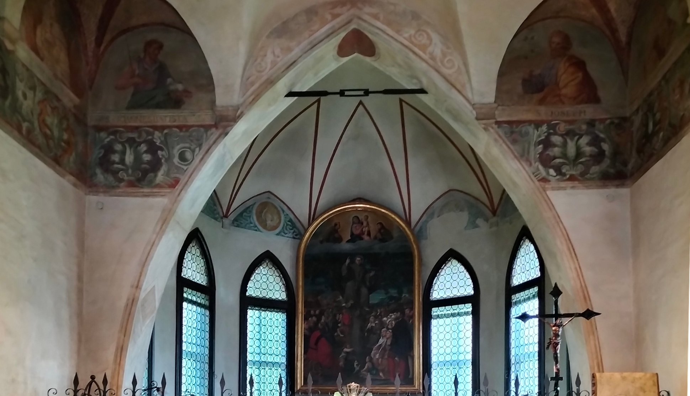
L’Oratorio del Noce fu affrescato tra il 1535 e il 1537, probabilmente da un affermato pittore padovano, Girolamo Tessari detto Dal Santo, anche se studi più recenti individuano nel coevo Gualtiero Padovano l’autore. Sulle pareti dell'aula dieci scene raccontano miracoli compiuti da sant'Antonio. Volgendo le spalle alla porta d’ingresso, troviamo: sulla parete sinistra dall’alto in basso, da sinistra a destra
The Oratory of Noce was frescoed between 1535 and 1537, likely by a renowned Paduan painter, Girolamo Tessari, known as Dal Santo, although more recent studies identify his contemporary Gualtiero Padovano as the artist. On the walls of the hall, ten scenes illustrate the miracles of Saint Anthony. With our backs to the entrance door, these are: on the left wall, from top to bottom, from left to right
È uno dei miracoli più famosi di sant’Antonio di cui esiste una ricca iconografia. Nello spazio delimitato dalla semilunetta incontriamo dieci personaggi, ognuno con una sua funzione. In primo piano la mula che si inginocchia innanzi al Santo che le porge l’ostia consacrata, disdegnando la biada che le viene offerta dal giovane. Di straordinaria plasticità è il padrone col bastone in mano, nell’atto di percuotere la bestia. Sullo sfondo si intravvedono un palazzo e una chiesetta gotica. L’affresco fa riferimento a un episodio in cui un eretico sfidò il Santo a dimostrare la presenza di Cristo nell'ostia consacrata: egli avrebbe tenuto chiusa la sua mula a digiuno per giorni, poi l’avrebbe portata in piazza, mettendole davanti della biada. Allo stesso tempo Antonio avrebbe dovuto mettere l'ostia di fronte alla mula: se l’animale si fosse inginocchiato davanti alla particola, ignorando il cibo, l’eretico si sarebbe convertito.
This is one of Saint Anthony’s most famous miracles and is depicted with rich iconography. In the space delimited by the semi-lunette, there are ten figures, each with their own function. In the foreground, the mule kneels before the Saint, who offers it the consecrated host, disdaining the fodder offered by the young man. The master, with a stick in his hand, strikes the beast with extraordinary poise. In the background, a palace and a small Gothic church can be seen. The fresco refers to an episode in which a heretic challenged the Saint to prove the presence of Christ in the consecrated host: he would keep his mule locked up and fasting for days, then take it to the square, placing fodder before it. At the same time, Anthony was to place the host in front of the mule: if the animal knelt before the host, ignoring the food, the heretic would convert.
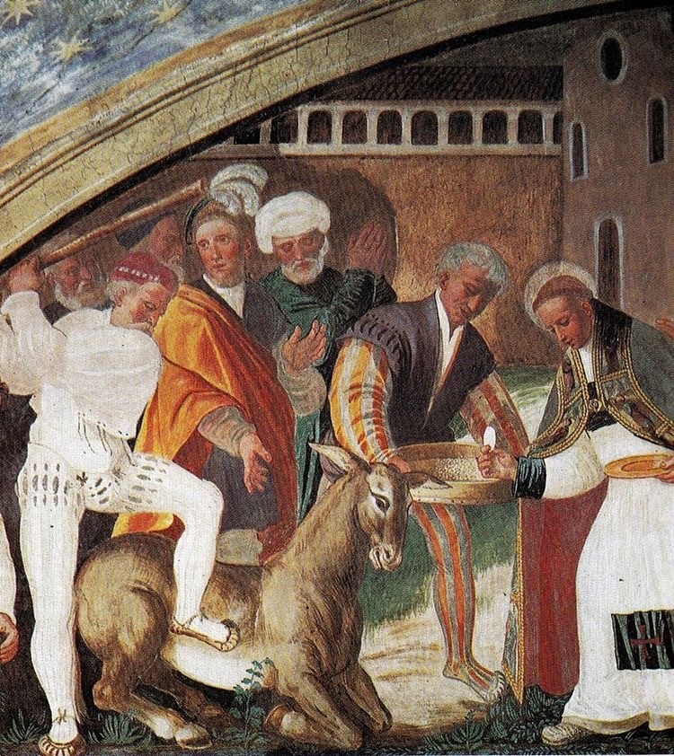
L'affresco del miracolo dell'anello si trova nella parete di sinistra del Noce. Vi sono raffigurati, da sinistra a destra, tre momenti successivi della stessa scena: nel primo, un uomo sulla sponda di un veliero in mezzo al mare scruta preoccupato tra le onde dove gli è caduto un prezioso anello; nel secondo, incontriamo lo stesso personaggio all'interno di una chiesa mentre consegna ad Antonio e a un altro frate un grosso pesce; nel terzo, la scena si sposta nella cucina del convento dove l'anello perduto viene ritrovato all’interno del pesce. L'epigrafe spiega «Il santo ritrova la pietra preziosa che viene restituita al padrone in seguito a un dono offerto da costui». L’episodio rientra tra quelli che narrano guarigioni e interventi miracolosi a favore di singoli e famiglie.
The fresco of the Miracle of the Ring is located on the left wall of the Noce. From left to right, it depicts three successive moments from the same scene: in the first, a man on the edge of a sailing ship in the middle of the sea peers worriedly into the waves where he has dropped a precious ring; in the second, the same figure inside a church as he delivers a large fish to Anthony and another friar; in the third, the scene shifts to the convent’s kitchen, where the lost ring is found inside the fish. The epigraph explains, “The Saint finds the precious stone, which is returned to its owner following a gift offered by the latter.” This episode is one of those that tell of healings and miracles for individuals and families.
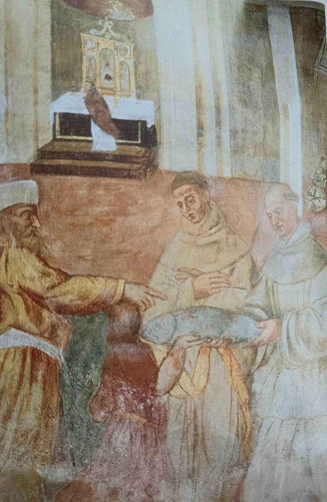
L’affresco rappresenta uno dei miracoli inediti di sant’Antonio presenti solo al Noce. In primo piano, sulla sinistra, incontriamo il Santo mentre, dall’alto di un noce, che si presume sia quello sul quale poi sorse il santuario, predica al popolo. Sullo sfondo un campo seminato di grano. La gente, incurante dei danni che avrebbe arrecato al raccolto, per ascoltarlo aveva calpestato il campo. Grazie all’intervento miracoloso di Antonio le spighe si risollevano e il campo ritorna vigoroso. Il miracolo allude al problema della fame, terribile calamità ben nota agli abitanti del paese negli anni in cui fu realizzato il ciclo. L’origine di questo episodio, che rientra tra quelli che rievocano miracoli legati alla predicazione di Antonio, è da porre in relazione a quanto ci racconta l’anonimo francescano che scrisse nel 1232 la prima biografia di Sant’Antonio chiamata Assidua.
The fresco depicts one of the unpublished miracles of Saint Anthony, depicted only at the Noce. In the foreground, on the left, the Saint can be seen while preaching to the people from the top of a walnut tree, which is presumed to be the one in the place where the sanctuary was later built. In the background, a field sown with wheat. The people, unaware of the damage they were doing to the harvest, had trampled the field to listen to him. Thanks to Anthony’s miraculous intervention, the ears of wheat rise again, and the field returns to its previous vigour. The miracle alludes to the problem of hunger, a terrible calamity well known to the inhabitants of the area in the years when the cycle was painted.
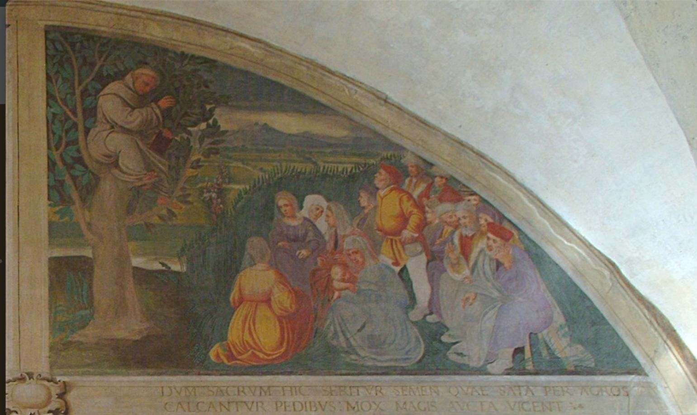
La scena descrive il momento in cui sant’Antonio, parlando ad un’assemblea multilingue, si fa comprendere da ognuno nel suo idioma natio. L’allineamento frontale della teoria dei cardinali con al centro il Papa e le due ali di folla richiama in modo esplicito il Gesù tra i dottori della Scuola del Carmine. La mano di Girolamo è facilmente riconoscibile nella figura del Papa con i chierici mentre nelle altre figure, è evidente la mano di uno o più aiutanti. Sulla parete destra dall’alto in basso, da destra a sinistra
The scene describes the moment when Saint Anthony, speaking to a multilingual gathering, makes himself understood by each person in their native language. The front-wise alignment of the cardinals with the Pope in the centre and the two wings of the crowd explicitly recalls Jesus between the doctors at the Scuola del Carmine. Girolamo’s style is easily recognisable in the figure of the Pope with the clerics, while in the other figures the work of one or more assistants is evident.
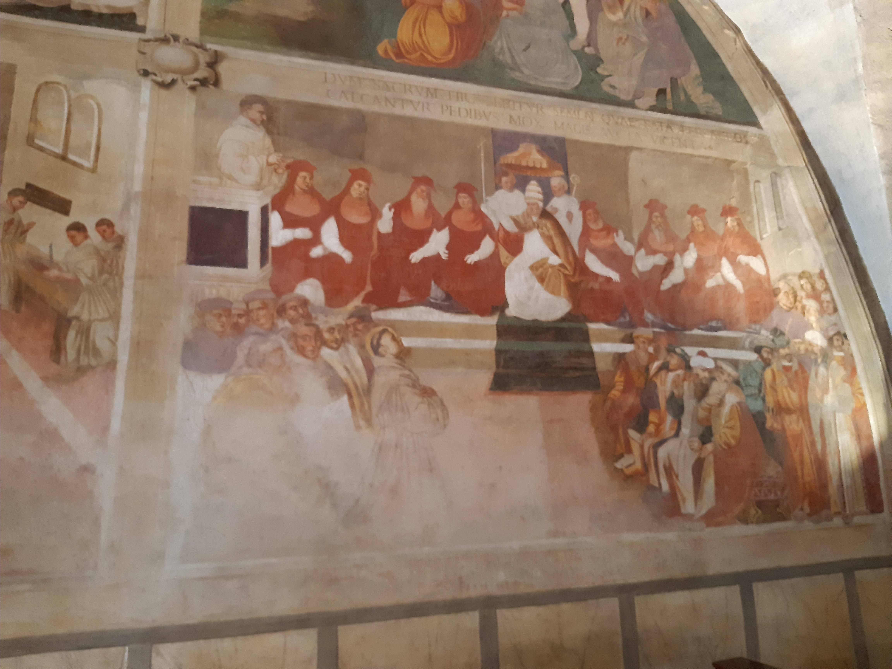
Si tratta di uno dei miracoli più noti di sant'Antonio. La scena ritrae Antonio nell’atto di riattaccare il piede a un padovano di nome Leonardo. Costui aveva confessato ad Antonio di aver dato un calcio alla propria madre. Colto dal rimorso ed equivocando il rimprovero di frate Antonio, una volta tornato a casa si era reciso il piede. La notizia si era diffusa immediatamente per la città, arrivando anche all’orecchio della madre di Leonardo. Costei, visto il figlio così mutilato e saputane la motivazione, si lamentava, incolpando frate Antonio di aver istigato il figlio. Il Santo dopo averla calmata si recò nell’abitazione dello sventurato e congiunse miracolosamente il piede tagliato alla gamba, facendovi contemporaneamente il segno della croce. All’istante, il piede si riattaccò miracolosamente. L’episodio rientra tra quelli che narrano guarigioni e interventi miracolosi a favore di singoli e famiglie.
This is one of Saint Anthony’s better-known miracles of. The scene depicts Anthony in the act of reattaching the foot to a citizen of Padua called Leonardo. The latter had confessed to Anthony that he had kicked his own mother. Overcome with remorse and misinterpreting Brother Anthony’s reprimand, once back home, he had cut off his foot. The news had spread immediately throughout the city, reaching the ears of Leonardo’s mother. She, seeing her son so mutilated and knowing why he had done it, lamented, blaming Brother Anthony for having instigated her son. The Saint, after calming her down, went to the unfortunate man’s home and miraculously joined his cut-off foot to his leg, making the sign of the cross at the same time. Instantly, the foot was miraculously reattached.
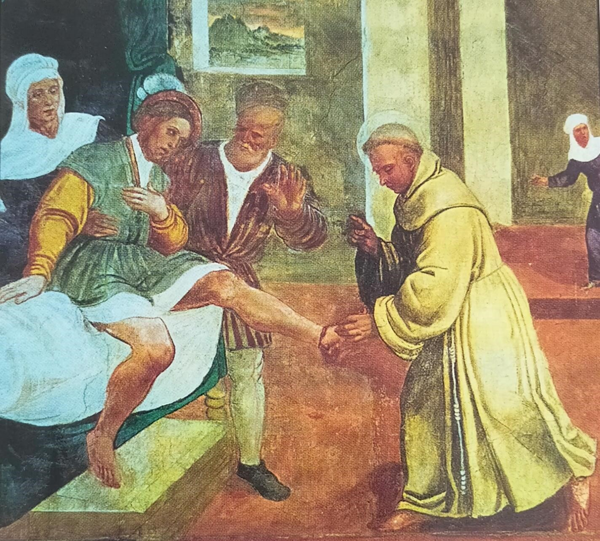
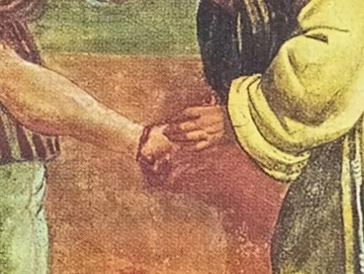
Vi è raffigurata una scena in cui Antonio partecipa ad un banchetto durante il quale gli viene offerto del cibo avvelenato che il Santo mangia, dopo averlo benedetto, senza subire alcuna conseguenza. L’ambientazione è essenziale: la stanza è disadorna. La luce proviene da una grande finestra oltre alla quale si intuisce un paesaggio collinare. Il repertorio iconografico è chiaramente preso in prestito dal tema de L’ultima cena. Sant’Antonio, tuttavia, non è raffigurato al centro della mensa, come il Cristo, bensì, in modo originale, in testa alla tavola, a destra, di profilo e non allineato agli altri commensali, quasi a sottolineare la sua distanza dal male, ovvero dall’inganno ordito a suo danno. Sulla stessa linea del Santo, all’altro capo della tavola, è invece la serva, persona umile, che nulla sa del complotto. Degna di nota la scimmia raffigurata in basso, ai piedi della tavola, incarnazione del male e del demonio, secondo la tradizione iconografica dell’epoca.
A scene is depicted where Anthony participates in a banquet during which he is offered poisoned food, which the Saint eats, after blessing it, without suffering any consequences. The setting is essential: the room is bare. The light comes from a large window through which there is the glimpse of a hilly landscape. The iconographic repertoire is clearly borrowed from the theme of The Last Supper. Saint Anthony, however, is not depicted in the centre of the table, like Christ, but rather, quite originally, at the head of the table, on the right, shown in profile, and not aligned with the other diners, as if to underline his distance from evil, or rather from the plot hatched against him. On the same line as the Saint, at the other end of the table, is the servant, a humble person, who knows nothing about the plot. Worth noting is the monkey depicted at the bottom, at the foot of the table, an incarnation of evil and the devil, according to the iconographic tradition of the time.
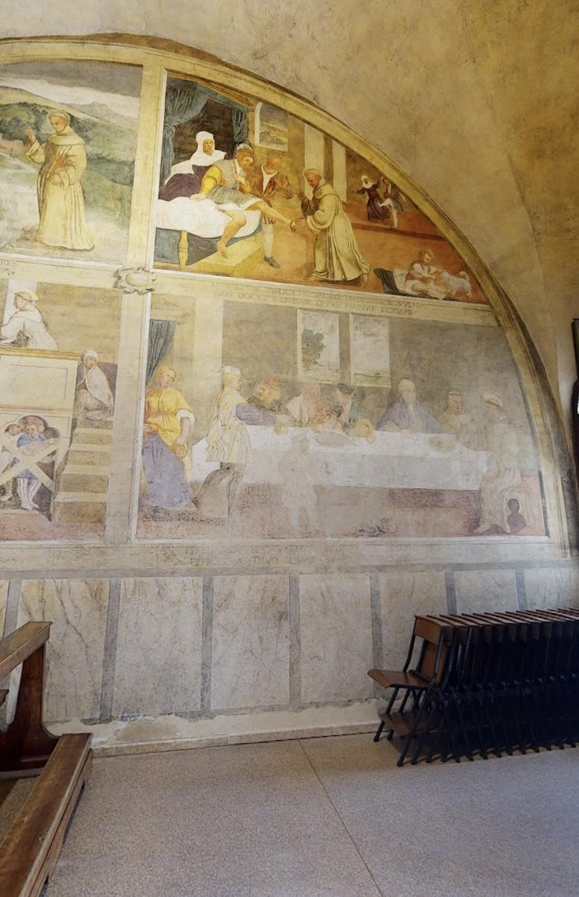
L’affresco ritrae in primo piano Antonio in riva al mare e sullo sfondo Rimini e le colline dell’entroterra romagnolo. Mentre si trovava nella città, che a quel tempo era piena di eretici, Antonio iniziò a predicare senza ottenere ascolto, anzi venendo deriso. Allora il Santo si diresse verso il mare e iniziò a predicare ai pesci. Questi ultimi si radunarono dinanzi a lui sporgendo le teste fuori dall’acqua per ascoltarlo. L’evento miracoloso attirò l’attenzione dei cittadini e una folla si raccolse attorno ad Antonio che li esortò ad abbandonare l’eresia e a tornare alle vie del Signore. L’episodio rientra tra quelli che rievocano miracoli legati alla predicazione di Antonio.
The fresco shows Anthony in the foreground, standing by the sea, with Rimini and the hills of Romagna in the background. While he was in the city, which at that time was inhabited by heretics, Anthony began to preach, but no-one listened, and indeed he was even mocked. The Saint then went to the sea and started preaching to the fish. They gathered in front of him, raising their heads out of the water to listen. This miraculous event caught the attention of the citizens, and a crowd gathered around Anthony, who urged them to abandon their heresy and return to the ways of the Lord. This episode is another that tells of the miracles relating to Anthony’s preaching.
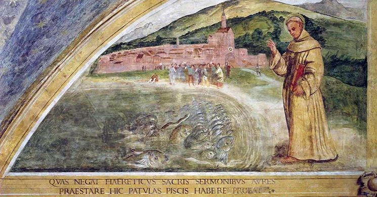
È probabilmente l’opera più significativa di tutto il ciclo del Noce. L’episodio rientra tra quelli che narrano interventi miracolosi a favore di singoli e famiglie. Il miracolo racconta l’intervento di frate Antonio presso il marchese di Ferrara che, sospettando di adulterio la moglie, non intendeva riconoscere il figlio. Su invito di Antonio, il bimbo parla e si muove verso il padre, riuscendo così a “calmare le acque”. Ciò che colpisce è la vivacità della scena ed il grande numero di personaggi che la popolano, alcuni sfumati sullo sfondo, altri tipicamente descritti, come nel caso dei due bambini che giocano sotto al pulpito, alla madre in disparte avvolta nel mantello, timorosa di quanto sta avvenendo, agli uomini in abiti cinquecenteschi sulla sinistra, allo splendido gruppo di donne al centro della scena, avvolte da vesti rigonfie ricche di panneggi e trasparenze magistralmente rese.
This is probably the most important work in the entire Noce cycle. The episode is another that tells of miracles performed for individuals and families. The miracle tells of Brother Anthony’s action at the court of the Marquis of Ferrara who, suspecting his wife of adultery, refused to recognise his son. On Anthony’s request, the child spoke and moved towards his father, thus managing to “calm the waters.” What stands out is the liveliness of the scene and the large number of characters: some are blurred in the background; others are clearly described. For example, the two children playing under the pulpit, the mother standing to the side wrapped in her cloak, fearful of what is happening, the men in sixteenth-century dress on the left, and the splendid group of women in the centre, dressed in full gowns rich in drapery and transparencies, masterfully painted.
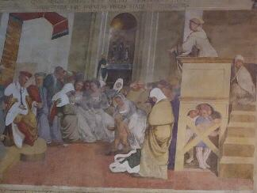
Sulle semilunette sopra la porta d’ingresso A sinistra
Aleardino da Salvaterra, un nobile cavaliere che aveva sempre deriso i fedeli cattolici considerandoli ignoranti e ingenui, dopo la morte del Santo, giunse a Padova con la famiglia. Mentre era a tavola, gli altri commensali gli raccontavano con entusiasmo dei tanti miracoli operati da Antonio. Tutti affermavano che era veramente un Santo. Allora Aleardino, vuotato il suo bicchiere, disse: “Se colui che affermate esser santo farà restare intatto questo bicchiere, io crederò che sia vero quello che vi sforzate di farmi credere su di lui”. Ciò detto, lanciò con forza il bicchiere sul pavimento. Incredibilmente il bicchiere rimase intatto e si ruppero invece le mattonelle. Alla vista del miracolo il cavaliere si convertì e, accettata la sua devozione, predicò con costanza i miracoli.
Aleardino da Salvaterra, a noble knight who had always mocked Catholic believers, thinking they were ignorant and naive, came to Padua with his family after the death of the Saint. While at the table, the other guests enthusiastically told him about the many miracles performed by Anthony. They all said that he was truly a Saint. Then Aleardino, after having emptied his glass, said: “if he you call a Saint can keep this glass unbroken, I will believe what you are trying to convince me of.” With these words, he threw the glass hard against the floor. Incredibly, the glass remained whole, while the tiles broke instead. At the sight of this miracle, the knight converted and, once he had accepted his devotion, he constantly spread the stories of the miracles.

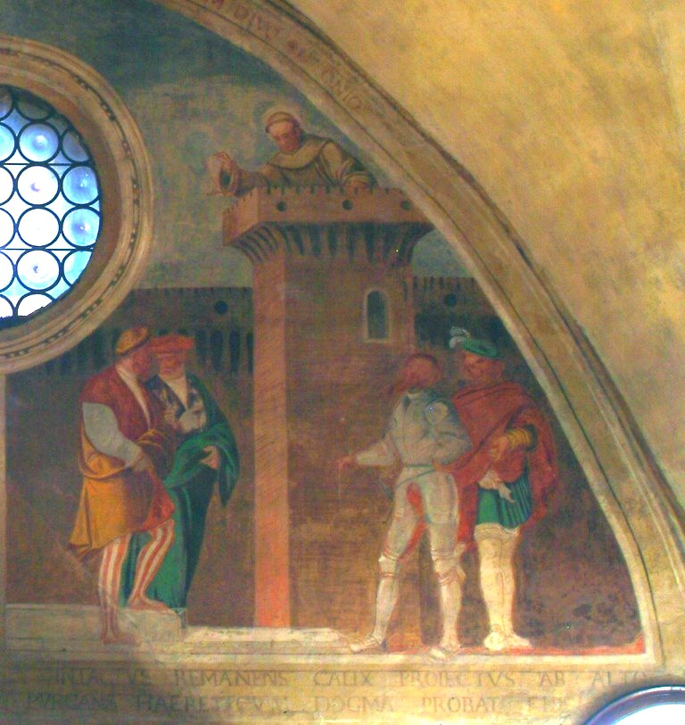
A destra
L’affresco rappresenta uno dei miracoli inediti di sant’Antonio presenti solo al Noce. Nessuna fonte storica parla di questo episodio. La scena ritrae, quasi in sequenza fotografica, una rovinosa caduta da cavallo. Il cavaliere cade dal bianco destriero mentre si raccomanda al Santo, raffigurato in cielo, sopra alla città di Venezia, in atteggiamento protettivo e benedicente. Grazie alla devozione il cavaliere viene liberato dai pericoli mortali e si salva. Il fatto che sant’Antonio appaia in cielo significa che si tratta della raffigurazione di una intercessione miracolosa post mortem. L’episodio, che pare alludere alla storia della famiglia “Camposampiero dal Leone” rientra tra quelli che narrano guarigioni e interventi miracolosi a favore di singoli e famiglie.
The fresco shows one of the unknown miracles of Saint Anthony, found only at the Noce. No historical sources mention this episode. The scene looks almost like a photo sequence: a knight falls from his white horse while praying to the Saint, who appears in the sky above the city of Venice, in a protective and blessing gesture. Thanks to his devotion, the knight is saved from mortal danger. The fact that Saint Anthony is shown in the sky means that this is a posthumous miracle. The episode, which seems to refer to the history of the “Camposampiero dal Leone” family, is one that tells of healings and miracles performed on individuals and families.
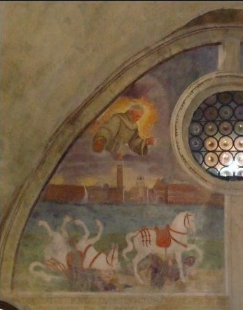